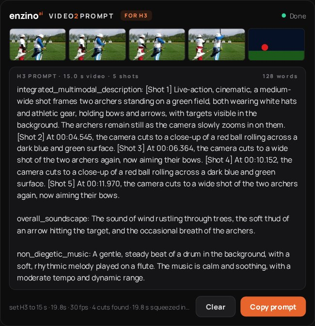
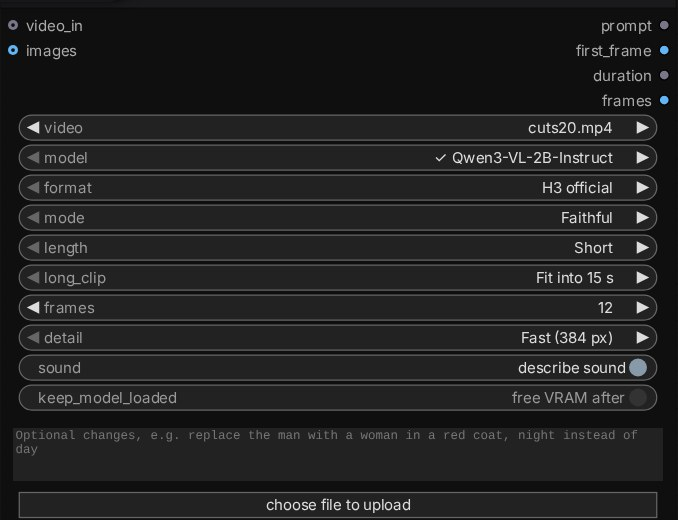
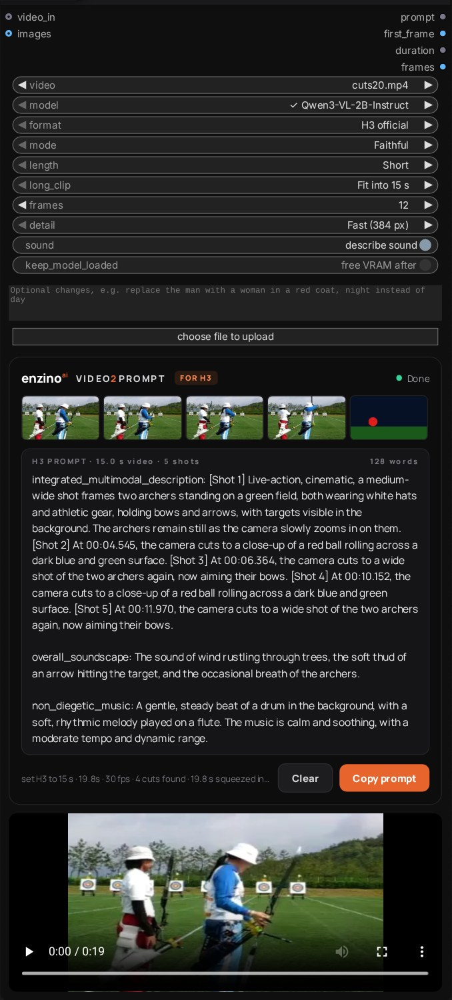

A video in.
An H3 prompt out.
One ComfyUI node watches any clip with a local Qwen vision model and writes the prompt MiniMax H3 needs to recreate it, in MiniMax's own official prompt format: shots and cuts, action in order, camera moves, soundscape and music. Always one prompt for one H3 video of 15 s max, with the exact time of every cut.

INSTALLThree minutes, once
- Copy the folder
Node/ComfyUI-Enzino-Video2PromptintoComfyUI/custom_nodes/. - Install the requirements with the ComfyUI python (portable build shown):
Optional, only for the 8B / Qwen3.5-9B models on a 16 GB card:cd ComfyUI_windows_portable python_embeded\python.exe -m pip install -r ComfyUI\custom_nodes\ComfyUI-Enzino-Video2Prompt\requirements.txtpython_embeded\python.exe -m pip install bitsandbytes - Restart ComfyUI, then drag
Workflow/Enzino Video2Prompt.jsononto the canvas. You can also add the node by hand: double-click the canvas and type Video2Prompt (category Enzino/H3). - First run only: the chosen Qwen model downloads by itself to
ComfyUI/models/VLM/. Watch the console for progress.
HOW TO USEPick a video, press Run

1 · Choose the clip
Click choose file to upload, or pick a video already in ComfyUI/input. The preview plays inside the node. The node reads mp4, mov, webm, mkv, avi, m4v and gif.
You can also wire a video in instead: the video_in socket takes the core Load Video node, and images takes frames from any loader (VHS…). A wired input wins over the file field.
2 · Set the format, the mode and the length
H3 official (default) writes MiniMax's own structure, see Format. Faithful recreates the whole clip. Motion only keeps just the action and the camera, which is what you want for animating your own picture. See Modes.
When the clip is longer than 15 s, a long_clip setting appears. See Long clips.
3 · Run
The status turns orange (Watching the video…), and the model is unloaded from VRAM when it's done, so H3 gets the whole card back.
4 · Get the prompt
The card shows the frames the model actually looked at, then the prompt with the video length, the number of shots and the word count. You can edit the text right in the card before you press Copy prompt. The line under it tells you the duration to set in H3, e.g. set H3 to 15 s.
To skip copy-paste, wire the prompt output to the text input of your H3 node, duration to its length, and first_frame to an image-to-video start image.
The prompt stays saved in the workflow, so it is still there when you reopen it.

Classic and Nodes 2.0
The node works in both canvas modes. The prompt card sits right under the settings, so you never have to scroll to find it. The video preview below it keeps a fixed height, even for vertical 9:16 clips. The card grows to show the whole prompt, so there is no scrollbar, and zooming over it zooms the canvas as usual. It always takes the node's width and never overlaps other blocks.
Outputs
| OUTPUT | WHAT IT IS |
|---|---|
| prompt | The H3 prompt (STRING) |
| first_frame | First frame of the analysed clip, ready for I2V |
| duration | Length of the video the prompt describes, in seconds (15 max). Set your H3 duration to it |
| frames | All the frames the model looked at (IMAGE batch) |
FORMATMiniMax's official H3 prompt
With format = H3 official, the node writes the structure from MiniMax's own prompt guide (MiniMax-H3 repository, h3-prompt-writing skill):
integrated_multimodal_description: [Shot 1] Live-action, cinematic, a medium-wide shot frames two archers on a green field…
[Shot 2] At 00:06.000, the camera cuts to …
overall_soundscape: Wind moves through the trees; an arrow leaves the bow with a soft thud…
non_diegetic_music: N/A- Shots: the node finds the cuts in your clip. The first shot has no timestamp, and each later shot starts with its exact cut time,
[Shot 2] At 00:06.000. - Camera: MiniMax's vocabulary, which is the motion type plus an optional amplitude and speed, e.g. pushes in with small amplitude at slow speed.
- Sound:
overall_soundscapedescribes the ambience and action sounds, inferred from the picture since the model can't hear the clip.non_diegetic_musicisN/Aunless the clip looks like a montage, an ad or a music video. Turn sound off for a silent video, which sets both fields toN/A. - Motion only adds MiniMax's image-to-video line at the top: For the target video, at 0.00 seconds into the target video, <Picture 1> (from [Shot 1]) is fully referenced.
Choose Simple paragraph if you prefer one plain paragraph, for example for another video model.
LONG CLIPSOver 15 seconds: still one prompt
H3 makes videos of 4 to 15 s, and you always get one prompt. The long_clip setting only shows up when your video is longer than 15 s:
| CHOICE | WHAT IT DOES |
|---|---|
| Fit into 15 s (default) | The whole clip in one 15 s video. Every event is kept in order, only a bit faster, and every cut time is scaled to the 15 s timeline. A cut at 6.0 s in a 19.8 s clip becomes [Shot 2] At 00:04.545, so each change (a new outfit, a new place) lands at the right moment. |
| Window | Only the part between window_start and window_end (in seconds, 15 s max), at real speed. With end = 0, the window is 15 s from the start. |
Cuts are found automatically, including jump cuts where the framing stays the same and only something changes, like an outfit in a try-on video.
MODESFaithful or Motion only
● Faithful
For text-to-video. Describes everything H3 needs to rebuild the shot: framing, subject, setting, action in order, camera move, light, style.
● Motion only
For image-to-video with your own picture. Leaves out faces, clothes, colours and the place, and describes only who moves, how, in what order, and what the camera does.
integrated_multimodal_description: [Shot 1] Live-action, the woman shown in <Picture 1> keeps her look and framing. She lifts the bow with both hands and draws the string back…
Notes: change the scene
Anything you write in notes takes priority over what is in the clip. Use it to remake a shot with something else: "replace the archers with two samurai", "night, neon rain", "anime style". The camera move and the timing are kept.
SETTINGSRecommended values
| SETTING | RECOMMENDED | WHAT IT DOES |
|---|---|---|
| model | ✓ Qwen3-VL-4B | Best speed/quality balance on 12–16 GB. Use 8B for the finest detail (it loads in 4-bit on 16 GB when bitsandbytes is installed), and 2B on 6–8 GB cards. |
| format | H3 official | MiniMax's own structure. Simple paragraph for other models. |
| mode | Faithful | Motion only for I2V with your own image. |
| long_clip | Fit into 15 s | Only shown for clips over 15 s. See Long clips. |
| length | Detailed | Main description of about 60–100 words (Short) or 140–220 words (Detailed). Detailed gives H3 more to work with; Short is quicker to edit by hand. |
| frames | 16 | Frames read, with at least 2 in every shot. Use 8 for a 3–5 s clip, and 24–32 for many cuts or fast action. |
| detail | Fine (768 px) | The size of each frame the model sees. Fine catches small details (clothes, objects, faces). On 8 GB cards or with the 2B model, use Balanced (512 px) or Fast (384 px). |
| sound | on | Fills overall_soundscape from what is seen, since H3 generates sound. The model does not hear the clip. Off = silent video. |
| keep_model_loaded | off | Turn it on only when you analyse several clips in a row with nothing else running. |
FILESWhat gets downloaded
The model list shows the Qwen vision models you already have first, marked ✓. The node finds them in models/VLM, models/LLM (also used by other Qwen-VL nodes), the Hugging Face cache, and models/text_encoders. That last folder holds the full Qwen3-VL files that Krea 2, Fibo 2 or Qwen-Image 2.1 use, shown as “· text encoder”. Those run through ComfyUI's own engine, the same one behind its Generate Text node. The MiniMax H3 text encoder is a cut-down 32B made only for conditioning, so it can't write text and isn't listed. Models marked ↓ are downloaded to ComfyUI/models/VLM/<name> the first time you use them, and only the one you pick.
| MODEL | SOURCE | SIZE | VRAM (approx.) |
|---|---|---|---|
| Qwen3-VL-4B (recommended) | Qwen/Qwen3-VL-4B-Instruct | 8.9 GB | ~10 GB |
| Qwen3-VL-8B | Qwen/Qwen3-VL-8B-Instruct | 17.5 GB | ~19 GB · ~7 GB in 4-bit |
| Qwen3-VL-2B | Qwen/Qwen3-VL-2B-Instruct | 4.3 GB | ~5 GB |
| Qwen3.5-4B | Qwen/Qwen3.5-4B | 9.3 GB | ~10 GB |
| Qwen3.5-9B | Qwen/Qwen3.5-9B | 19.3 GB | ~21 GB · ~8 GB in 4-bit |
Already have a Qwen vision model somewhere else? Put its folder (with config.json and the .safetensors files) in models/VLM/, then press R to refresh. It shows up with a ✓. A download that was cut halfway is not listed as installed.
Pack contents
| FOLDER | CONTENTS |
|---|---|
| Node | ComfyUI-Enzino-Video2Prompt, to copy into custom_nodes |
| Workflow | Enzino Video2Prompt.json |
| Guide | This page |
TROUBLESHOOTINGIf something goes wrong
"transformers is too old" / model not recognised
python_embeded\python.exe -m pip install -U "transformers>=4.57". The Qwen3.5 models need a recent transformers (5.x).Out of memory (CUDA OOM)
The 8B model is very slow
bitsandbytes it doesn't fit in 16 GB and is partly offloaded to the CPU. Install bitsandbytes so it loads in 4-bit, or use the 4B."Could not read the video"
images.A cut is missing, or there is a cut where there isn't one
[Shot N] lines in the card before you copy.The prompt describes something that isn't in the clip
The download stops or fails
models/VLM/ and run again. You can also download the repo from Hugging Face yourself into that folder.TIPS & SHORTCUTSGet more out of it
| ACTION | HOW |
|---|---|
| Run | Ctrl + Enter |
| Copy the prompt | The Copy prompt button. Edit the text in the card first if you want to. |
| New prompt for the same clip | Change the mode, the length or the notes, then run again. The video is re-read only when it changes. |
| Remake a shot as I2V | Use Motion only, wire first_frame into your edit or upscale chain, then into H3 image-to-video. |
| Long clips | Cut them into single shots first. One prompt describes one shot best. |